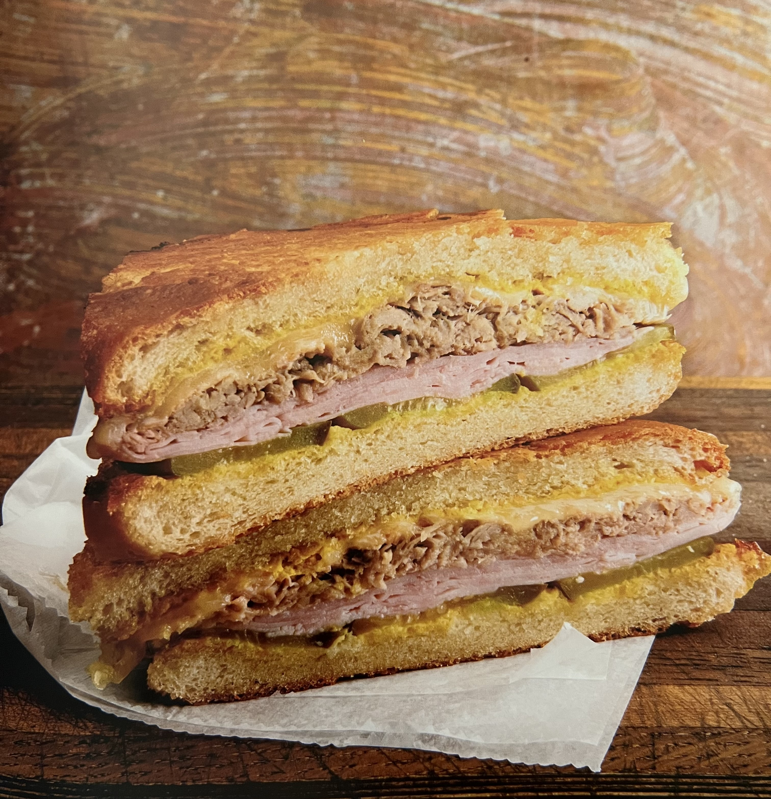

Cubanos
______________________________________________

______________________________________________
Description
Yes, you have craved one since you saw the movie Chef, and yes, you can make them actually shockingly easily when you have some meat and bread to do it.
_____________
Ingredients
- Unsalted butter, softened, to coat all sides
- 2 loaves Cubano bread, sliced to form 4 sandwiches
- 2 lb thin slices of boiled ham (not smoked)
- Yellow mustard, to coat
- 4-6 dill pickles, thinly sliced lengthwise (about 0.25 inches thick)
- 2-4 cups of mojo-braised pulled pork
- 8 slices Swiss cheese
_____________
Steps
- Butter the inside of each slice of Cubano bread with butter.
- In a large cold pan, place the bread buttered-side down over medium heat.
- Toast.
- While the bread toasts, in a separate medium pan, add a little butter and melt to coat the bottom.
- Working a few slices at a time, sear the ham over medium-high heat, browning both sides.
- Set the ham to the side and keep warm.
- Once the bread is toasted, generously coat the inside of each slice with yellow mustard.
- On the bottom slice of each sandwich, arrange the sliced pickles to cover, followed by a stacked layer of the seared ham.
- Add a layer of pulled pork, and top with a generous amount of Swiss cheese.
- Place the tops of the bread on the sandwiches.
- Preheat a heavy cast-iron pan, which will be used to flatten the toasting sandwich. Generously coat the top and bottom of the sandwiches with butter.
- Working in batches, in a medium, cold pan, place the sandwiches and set over medium heat.
- Place the preheated heavy cast-iron pan on top to press into the bread. Toast the sandwich until the bottom is golden.
- Then flip it and place the cast-iron skillet back on top to toast the other side. (A panini press will also work just fine.) Repeat the process to make the other sandwiches.
- Cut each sandwich on the diagonal into 2 pieces, and enjoy.
_____________
Recipe by Joshua Weissman